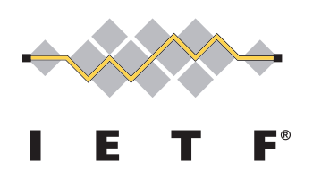

The Internet Engineering Task Force (IETF) is the premier Internet standards body, developing open standards through open processes.
The IETF is a large open international community of network designers, operators, vendors, and researchers concerned with the evolution of the Internet architecture and the smooth operation of the Internet. The technical work of the IETF is done in Working Groups, which are organized by topic into several Areas. Much of the work is handled via mailing lists. The IETF holds meetings three times per year.
The IETF working groups are grouped into areas, and managed by Area Directors, or ADs. The ADs are members of the Internet Engineering Steering Group (IESG). Providing architectural oversight is the Internet Architecture Board, (IAB). The IAB also adjudicates appeals when someone complains that the IESG has failed. The IAB and IESG are chartered by the Internet Society (ISOC) for these purposes. The General Area Director also serves as the chair of the IESG and of the IETF, and is an ex-officio member of the IAB. The Internet Assigned Numbers Authority (IANA) is the central coordinator for the assignment of unique parameter values for Internet protocols.
More information about the IETF standards process is available here and in RFC2026.
New participants in the IETF might find it helpful to read Getting Started in the IETF and The Tao of the IETF, (also available as RFC4677). You can learn more via tutorials or mentoring.
Click to learn more
ICANN is a not-for-profit public-benefit corporation with participants from all over the world dedicated to keeping the Internet secure, stable and interoperable. It promotes competition and develops policy on the Internet's unique identifiers. Through its coordination role of the Internet's naming system, it does have an important impact on the expansion and evolution of the Internet.
Click to learn more
The World Wide Web Consortium (W3C) is an international community where Member organizations, a full-time staff, and the public work together to develop Web standards. Led by Web inventor and Director Tim Berners-Lee and CEO Jeffrey Jaffe, W3C's mission is to lead the Web to its full potential. Contact W3C for more information.
Click to learn more